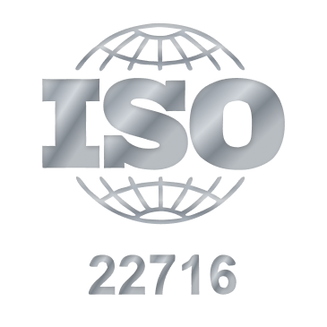

ISO 22716
Buenas prácticas de manufactura
Operamos bajo certificación ISO 22716, lo que garantiza que nuestros procesos de fabricación de cosméticos cumplen con estándares internacionales de calidad, seguridad y control.
Para los hoteles, esto significa ofrecer amenidades confiables, consistentes y seguras en cada habitación. Para el huésped, representa una experiencia de cuidado personal alineada con estándares globales, generando confianza y satisfacción durante su estancia.